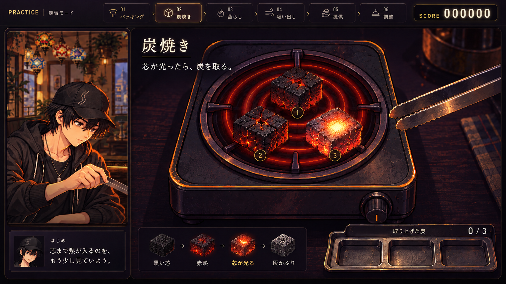
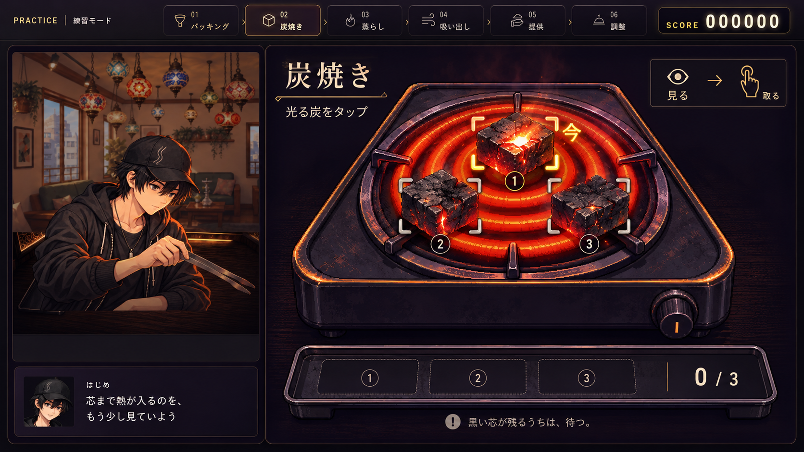
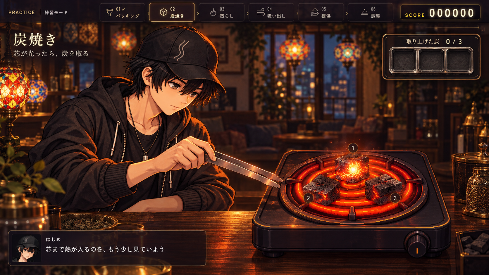
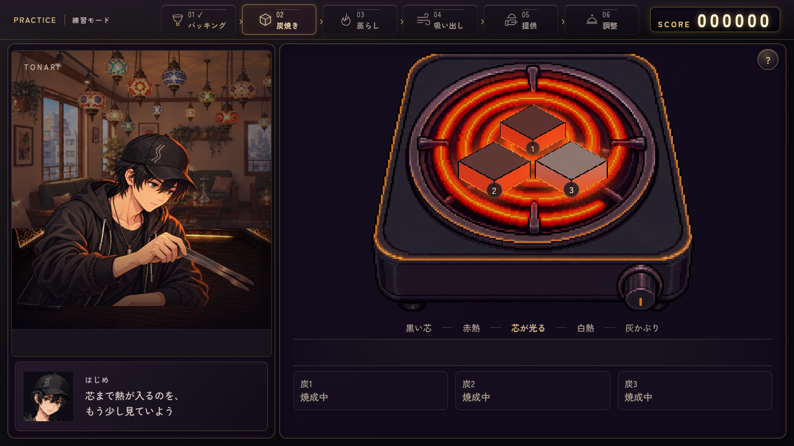

A：熾火クローズアップ 本命
コンロの寄り画で、炭の灰・赤熱・芯の一瞬の光を見せる。取った炭はトングで回収皿へ。見た目と「取った」手応えを一緒に強める。
改修規模：中
現行の人物枠を活かせる。次の炭を見続けられる、局所的な成功演出にする。
A：熾火クローズアップ 本命
炭の質感と芯の光を主役に。トングで取り上げ、回収皿へ置く手応えを強める。
改修規模：中 現行の画面構造を活かせる

B：スポットガイド
炭を離して、押す場所を明確に。「今」の合図と番号で初見・タッチでも読みやすく。
改修規模：小〜中 合図の強さは調整が必要

C：ワンシーン演出
はじめとコンロを同じ作業台へ。店内の光と手元の動きで、作業の雰囲気を強める。
改修規模：大 構図・手の動き・素材を再設計
Aを土台に、Bの押しやすさを。
炭の存在感と手応えを改善し、当たり領域を広げて重なりを解消する。
Cは作業風景全体を作り直す段階の候補に。
観察して、その炭を取る
ゲージ停止や新しい必須操作は足さず、炭ごとの焼ける速さと既存の判定を活かす。
次の炭を見続けられる
成功の光は局所へ。取り上げる演出中にも、ほかの炭を押せるようにする。
取った結果は回収枠へ
各炭の評価と早い／遅い誤差を回収側へ残し、操作する炭を文字で覆わない。
現行画面と、改善したいところ

コイルの強い赤に炭の変化が埋もれやすい。炭の質感と回収の手応えを足し、炭・説明・判定の間で視線が散る構成を整理する。